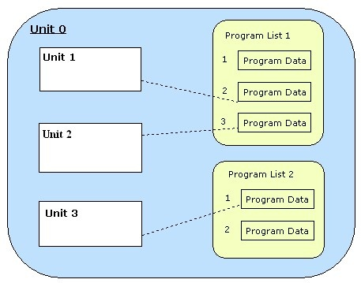

/ VST Home / Technical Documentation
Complex Plug-in Structures / Multi-timbral Instruments
On this page:
Related pages:
How to handle complex plug-in structures and multi-timbrality.
The Problem
A simple VST effect plug-in usually does not cause the host too many problems. It has only one audio input and output bus and a defined set of parameters that control aspects of its sound. But a VST plug-in can be a lot more complex than this. When the plug-in implements a multi-timbral musical instrument, the host is confronted with a range of problems regarding the integration of this plug-in in its GUI. To mention a few of them:
-
The plug-in can define multiple event input and multiple audio outputs. How can the host know on which output a sound will emerge when a note-event is transmitted to the plug-in?
- This may be of interest for the host in order to link a MIDI track to the corresponding audio channel.
-
The plug-in can define a list of programs that the user can load from the plug-in GUI. In a multi-timbral instrument, a program only affects a certain part of the plug-in (we call this part a 'unit'). How can the host know about these parts and about the plug-in defined programs that can be loaded?
- This may be of interest for a host in order to provide shortcuts for this functionality in its own GUI.
Since a VST plug-in unlike a hardware MIDI instrument is more than only a black box, a complex plug-in should help its host to provide a more convenient GUI integration than it is possible with hardware instruments. VST 3 uses the concept of units to describe the internal structure of the plug-in (see VST 3 Units) and a multi-timbral instrument is supposed to support the respective interfaces. But the preferred solution in VST 3 is a reduction of this complexity with the 'simple mode'.
The Simple Mode
The 'VST 3 simple mode' has the (selfish) background to support the so-called "simple instrument tracks" of Cubase. These tracks combine a MIDI track and VST audio channel (without the need to make any further assignments such as the choice of a MIDI output port or a MIDI channel). This mode is defined as 'only one input and only one output'. In 'simple mode', only MIDI channel 0 is used. Therefore, an instrument has to be mono-timbral.
The host will now work with multiple instances of the plug-in rather than using the same instance in a way that it contains multiple internal sections of the same kind. The VST-MA component model supports shared resources between multiple instances of a plug-in because usually the same module instance (dll/bundle) is used for each plug-in instance.
Yet, a plug-in has the option to support both the simple and the advanced mode with the same implementation. The host tests the general ability to support the 'simple mode' by checking the processor's class flags (Steinberg::PClassInfo2::classFlags) for the Steinberg::Vst::kSimpleModeSupported flag. If the plug-in is to be used in an instrument track (or whenever a host regards it more suitable) the Steinberg::Vst::IComponent::setIoMode method is called (before any other call!) to configure the plug-in. A mono-timbral plug-in should set this flag as well and does not need to take into account the setIoMode call.
Multi-timbral Program Lists
For a multi-timbral instrument plug-in, preset handling can be a lot more complex. In this case:
-
The plug-in can define any number of program lists.
-
Each unit can reference one program list (this reference must not change).
-
Each unit that uses a program list references one list item.
-
For each unit referencing a program list, a program selection parameter has to be exported (Steinberg::Vst::ParameterInfo::kIsProgramChange).
-
The plug-in can provide GUI for the selection of programs, but it must synchronize the corresponding program selection parameter.
-
A host may want to show the program list of the active unit in the same way as it shows the presets of a simple plug-in (usually in a separate control area at the top or the bottom of the window). The host must be able to display the correct list and the correct program name for the unit that has got the focus in the plug-in GUI.
To make this all work correctly, the plug-in must supply a valid implementation of Steinberg::Vst::IUnitInfo and it must operate the callback interface Steinberg::Vst::IUnitHandler accordingly.
Similar to the simple case, the host may want to save and load preset files. The component state of the plug-in is not useful here. A preset of a complex plug-in can be:
-
The state of a plug-in unit
- To support this, the plug-in must implement the Steinberg::Vst::IUnitData interface in its component part.
-
The contents of an item in the program list
- To support this, the plug-in must implement the Steinberg::Vst::IProgramListData interface in its component part.
A plug-in can support unit presets and program list presets.

See also Presets & Program Lists, Steinberg::Vst::IProgramListData, Steinberg::Vst::IUnitData
Units and Tracks
A unit can be associated with busses (or channels of busses). In particular, a unit can have a fixed and unique connection to an input MIDI channel. For a host, it might be useful to know about this connection and which unit can be associated with a specific MIDI track as a result of this. Often, the GUI of a multi-timbral plug-in does not show the settings of all similar units at the same time. Instead, there is some kind of unit selection. The idea is to be able to synchronize the selection of units in a plug-in to the selection of tracks in the host (in both ways).
When a plug-in GUI is organized in the described way, it should support the described behavior by implementing
- Steinberg::Vst::IUnitInfo::getUnitByBus: find out the track - unit relations
- Steinberg::Vst::IUnitInfo::getSelectedUnit: let the host know which track to select
- Steinberg::Vst::IUnitInfo::selectUnit: cause the plug-in to select its unit
and by calling
- Steinberg::Vst::IUnitHandler::notifyUnitSelection: trigger the host to synchronize its GUI
Routing
For a host, it may be interesting to know which VSTi channel in the mixer is the output of a specific MIDI track if the plug-in defines multiple audio output busses (represented as VSTi mixer channels in the host). In general, the host needs to know about any input to output routing of the plug-in. So if an unambiguous relation exists between a plug-in input and an output, the following method should be implemented:
- Steinberg::Vst::IComponent::getRoutingInfo: find out the output of a given input